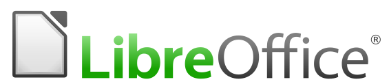
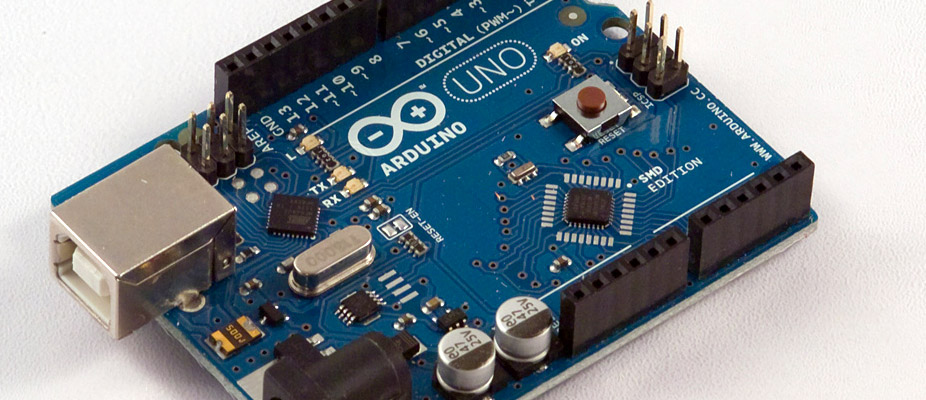
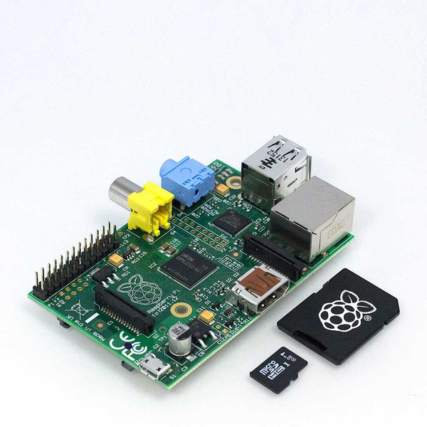

Introducción a JS: historia y aplicaciones
Historia
Fue creado en mayo de 1995 por Brendan Eich.
Ha tenido varios nombres como Mocha, LiveScript, pero finalmente debido a una estratégia de marketing adoptó el nombre de JavaScript
ECMAScript
ECMA es una empresa sin ánimo de lucro encargada de la estandarización
En 1997 JavaScript adopta el estándar ECMAScript para garantizar compatibilidad con los navegadores
Actualmente JavaScript es la implementación más conocida del estándar ECMAScript
ECMAScript
Durante la historia Microsoft e IE, no han querido aceptar el estándar, por el contrario organizaciones como Mozilla o Google han tratado de conservar dicho estándar
En su tercera edición se nota una acogida masiva, permitiendo a JavaScript estar en prácticamente todos los navegadores actuales.
Motores basados en el estándar ECMAScript
- Spidermonkey : mozilla.org
- Rhino : mozilla.org
- V8 : google
- JavaScriptCore : Apple Safari
- Carakan : Opera
¿ Qué es Javascript ?
JavaScript NO es Java
Javascript es un lenguaje interpretado orientado a objetos, desarrollado originalmente por Netscape (Brendan Eich).
A fin de minimizar la cantidad de conceptos para aprender JavaScript, su sintaxis es muy similar a la de C++ .
¿ Qué es Javascript ?
Javascript no es basado en clases como Java o C++, es basado en prototipos, es decir, no existen distinción entre clases e instancias. Simplemente se definen ciertas "plantillas", las cuales se pueden ir modificando en el tiempo. Todo objeto se puede adicionar como el "prototipo" de otro, permitiendo de esta manera al segundo objeto compartir las propiedades del primer objeto
¿ Qué es Javascript ?
JavaScript es un lenguaje de programación tanto imperativo como funcional
Importante : Es asíncrono
Ejemplo
Pereira.js(function() {
console.log("Let's Code");
});
Aplicaciones
-
Web browsers (Uso en páginas web)
-
client-side:
(Tradicionalmente) Interacción con el usuario, manipulación del DOM, etc.
AJAX
Animaciones
Contenido interactivo (juegos,video,audio)
Validación formularios
** javaScript al poder ejecutarse en el navegador del usuario, puede responder con mayor rapidez, puede detectar EVENTOS que HTML por sí solo no puede
-
Aplicaciones
-
Web browsers
-
server-side:
Netscape introdujo server-side scripting (SSJS) - 1994
A partir del año 2000 hay una proliferación de implementaciones de javaScript del lado del servidor
NodeJS es un notable ejemplo de javaScript del lado del servidor
-
Aplicaciones
-
-
Extensiones y Apple's
.svg)

-
Aplicaciones
-
-
javaScript en archivos PDF
Herramientas en Adobe Creative Suite, incluyendo Photoshop, Illustrator, Dreamweaver, and InDesign, permiten scripting a través JavaScript.
-
Aplicaciones
-
-
Secuencias de comandos personalizadas (macros)

-
Aplicaciones
-
-
GNOME Shell
"Much of the code of the shell is written in Javascript"

-
Aplicaciones
-
-
Herramientas de desarrollo (Debuggers)
Script debuggers se encuentra disponibles en Internet Explorer, Firefox, Safari, Google Chrome, and Opera.
-
Hardware y Javascript?
ar-drone An implementation of the networking protocols used by the Parrot AR Drone 2.0 and 1.0

Hardware y Javascript?

Hardware y Javascript?
Johnny-Five is an Open Source, JavaScript Arduino programming framework

Hardware y Javascript?
Pijs.io is a cloud-platform to write embedded applications for your Raspberry Pi, in JavaScript

Aplicaciones
Gracias.
/